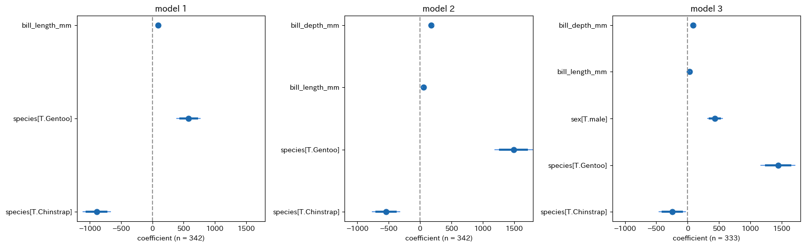
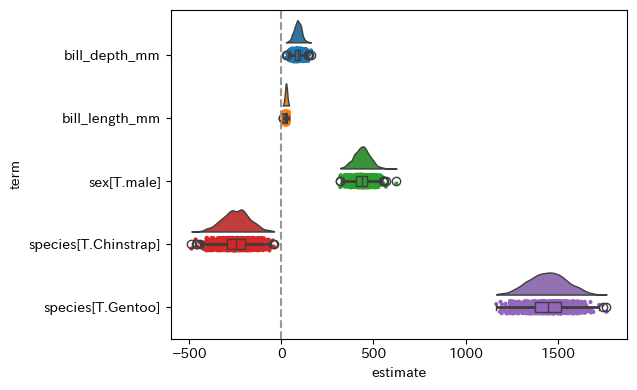

scaling up regression
ここでは実証分析の場面で便利な回帰分析の実装例を紹介します。
import py4stats as py4st
import statsmodels.formula.api as smf
from palmerpenguins import load_penguins
penguins = load_penguins() # サンプルデータの読み込み複数の回帰式を比較する
異なる説明変数の組合せを比較したい場合、リスと内包表記を使って実装するとコードが簡潔で扱いやすくなります。まずは smf.ols() をもとに回帰式を受け取って回帰分析の結果を返す関数 fit_ols と、回帰式のリストlist_fml を定義します。
# 回帰分析の推定
def fit_ols(fml, data):
res = smf.ols(fml, data = data).fit()
return res
list_fml = [
'body_mass_g ~ bill_length_mm + species',
'body_mass_g ~ bill_length_mm + bill_depth_mm + species',
'body_mass_g ~ bill_length_mm + bill_depth_mm + species + sex'
]回帰分析の実行部分は次のように記述します。
# 回帰分析の実行
list_fitted1 = [fit_ols(fml, penguins) for fml in list_fml]このとき list_fitted1 は回帰分析の推定結果を要素に持つリストであるため、py4st.compare_ols() にそのまま代入することができます。
py4st.compare_ols(list_models = list_fitted1) # 表の作成| term | model 1 | model 2 | model 3 |
|---|---|---|---|
| Intercept | 153.7397 | -1742.7202 *** | 843.9812 ** |
| (268.9012) | (313.7697) | (403.5956) | |
| species[T.Chinstrap] | -885.8121 *** | -539.6864 *** | -245.1516 *** |
| (88.2502) | (86.9425) | (84.5952) | |
| species[T.Gentoo] | 578.6292 *** | 1492.8283 *** | 1443.3525 *** |
| (75.3623) | (118.4442) | (107.7844) | |
| bill_length_mm | 91.4358 *** | 55.6461 *** | 26.5366 *** |
| (6.8871) | (7.2326) | (7.2436) | |
| bill_depth_mm | 179.0434 *** | 87.9328 *** | |
| (19.0997) | (20.2192) | ||
| sex[T.male] | 437.2007 *** | ||
| (49.1098) | |||
| rsquared_adj | 0.7810 | 0.8258 | 0.8613 |
| nobs | 342 | 342 | 333 |
| df | 3 | 4 | 5 |
この方法であれば、試したい回帰式のパターンが増えた場合でも、list_fml の要素を追加するだけで済むため、実行部分を変更する必要がありません。
また、回帰係数を視覚的に比較するには次のようなコードを使うと良いでしょう。
plt.rcParams["figure.autolayout"] = True
fig, ax = plt.subplots(1, 3, figsize = (3.2 * 5, 5), dpi = 100)
for k, mod in enumerate(list_fitted1):
py4st.coefplot(mod, ax = ax[k])
ax[k].set_xlim(-1200, 1800)
ax[k].set_title(f'model {k + 1}')
ax[k].set_xlabel(f'coefficient (n = {mod.nobs:,.0f})') ## グループ別の回帰分析
次に、データセットのグループ別に回帰分析を行う場合を考えます。この場合、データを受け取ると回帰分析の結果を返す関数 group_ols を定義し、回帰式は固定しておきます。
# グループ別の回帰分析の実行
def group_ols(data):
res = smf.ols(
'body_mass_g ~ bill_length_mm + bill_depth_mm + sex',
data = data).fit()
return res次に pd.DataFrame の .groupby() メソッドを使ってグループ分けを行い、続いて .apply() メソッドを使ってグループ別に回帰分析を実行します。ここでは、実行結果が回帰分析の結果を要素にもつ pd.Series になるので、.to_list() メソッドでリストに変換しています。
penguins2 = penguins.groupby('species')
list_fitted2 = penguins2.apply(group_ols).to_list()ここまでの準備ができれば、後は py4st.compare_ols() で分析結果を比較できます。
list_groups = list(penguins2.groups.keys())
py4st.compare_ols(
list_models = list_fitted2,
model_name = list_groups
)| term | Adelie | Chinstrap | Gentoo |
|---|---|---|---|
| Intercept | 984.4166 | 286.2540 | 1829.0302 *** |
| (601.1999) | (980.5230) | (638.6999) | |
| sex[T.male] | 476.6000 *** | 102.9407 | 536.5500 *** |
| (69.9994) | (119.3246) | (80.3899) | |
| bill_length_mm | 26.8589 ** | 18.4218 | 33.6324 *** |
| (11.4707) | (16.0333) | (11.2907) | |
| bill_depth_mm | 78.5228 *** | 135.4873 ** | 92.5900 ** |
| (25.1993) | (51.1571) | (41.9318) | |
| rsquared_adj | 0.5822 | 0.3687 | 0.6956 |
| nobs | 146 | 68 | 119 |
| df | 3 | 3 | 3 |
plt.rcParams["figure.autolayout"] = True
fig, ax = plt.subplots(1, 3, figsize = (3.2 * 5, 5), dpi = 100)
for k, mod in enumerate(list_fitted2):
py4st.coefplot(mod, ax = ax[k])
ax[k].set_xlim(-500, 1000)
ax[k].set_title(list_groups[k])
ax[k].set_xlabel(f'coefficient (n = {mod.nobs:,.0f})')
ブートストラップ回帰
前節でグループ別の回帰分析を行なった方法を応用すると、ブートストラップ法を簡単に実装することができます。
def est_ols(data):
fitted = smf.ols(
'body_mass_g ~ bill_length_mm + bill_depth_mm + species + sex',
data = data).fit()
return fitted 次にブートストラップ法の実行部分を作成します。ここでは pandas の DataFrame.sample() メソッドを使い、引数に frac = 1, replace = True を指定することで復元抽出を行います。また、ここでは反復回数を Efron, Hastie(2016, p.161)などで推奨されている \(B = 1000\) を指定しています。
# ブートストラップ法の実装
B = 1000 # ブートストラップ法の反復回数
model_list = [
penguins.sample(frac = 1, replace = True, random_state = 123)\
.pipe(est_ols)
for b in range(B)
]
boot_sample = pd.concat([py4st.tidy(mod) for mod in model_list])
len(boot_sample)
#> 6000次にブートストラップ統計量を集計して結果を確認しますが、ここではごく簡単に py4st.mean_qi() を使って、説明変数別に回帰係数の平均値と分位点を求めています。
res = boot_sample.groupby(['term'])[['estimate']]\
.apply(py4st.mean_qi)
print(res.round(4))
#> variable mean lower upper
#> term
#> Intercept 0 estimate 823.7098 823.7098 823.7098
#> bill_depth_mm 0 estimate 109.9439 109.9439 109.9439
#> bill_length_mm 0 estimate 17.8235 17.8235 17.8235
#> sex[T.male] 0 estimate 474.2673 474.2673 474.2673
#> species[T.Chinstrap] 0 estimate -191.4717 -191.4717 -191.4717
#> species[T.Gentoo] 0 estimate 1487.5680 1487.5680 1487.5680ブートストラップ法を使うと、次のような回帰係数の分布のグラフを描くこともできます。
import ptitprince as pt
fig, ax = plt.subplots(figsize = (np.sqrt(2) * 3, 3), dpi = 150)
pt.RainCloud(
data = boot_sample.sort_index().reset_index()\
.query('~term.str.contains("Intercept")'),
x = 'term',
y = 'estimate',
orient = 'h',
ax = ax
);
ax.axvline(0, ls = "--", color = '#969696');
補足
- データセットが大きい場合、ブートストラップ法の実行には時間がかかるので
boot_sample.to_csv('output/boot_sample.csv')を追加して保存しておいた方が、事後的な分析がしやすいと思います。 - 今回のような通常の回帰分析であれば、回帰係数の標準誤差は簡単に計算できるためブートストラップ法を使う必要性を感じにくいですが、傾向スコアを用いたIPW推定量など、標準誤差の推定にブートストラップ法が必要になる場合もあります。
- 今回は
DataFrame.sample()メソッドを使ったごく簡単な方法でブートストラップ法を実装していますが、もう少し効率的な方法もあるのではないかと思います。
参考文献
- Efron, Bradley, and Trevor Hastie. (2016). Computer age statistical inference. Cambridge University Press.
- 末石直也(2015)『計量経済学：ミクロデータ分析へのいざない』 日本評論社.